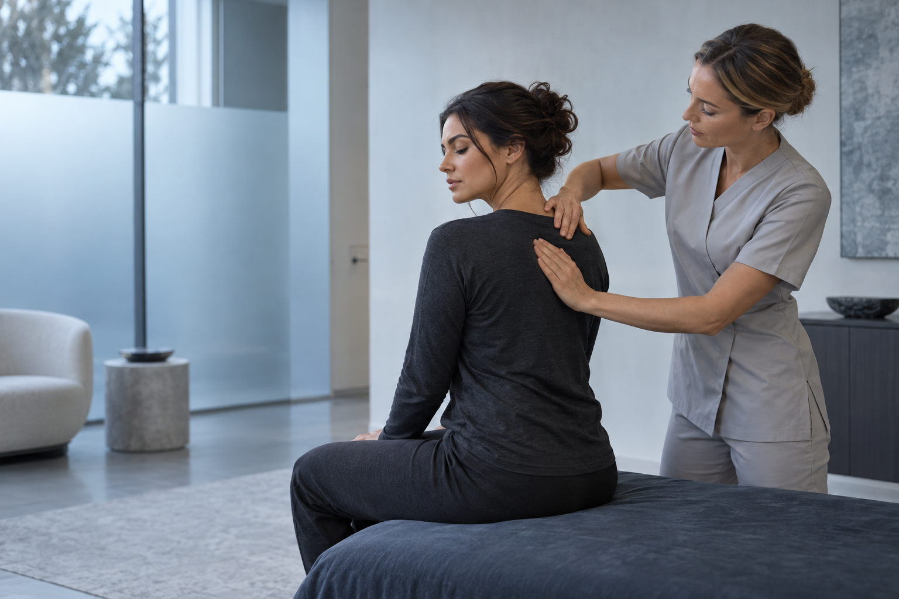
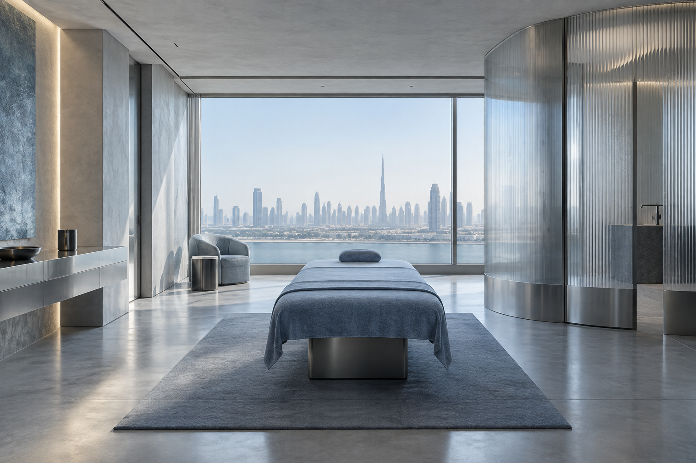

01RELEASE
Массаж
спины
Освободить плечи и спину от накопленного напряжения.
↗
Работаем с тем, что чувствует ваше тело сегодня, и с тем, как вы хотите двигаться завтра.

Освободить плечи и спину от накопленного напряжения.
↗Восстановить тело после нагрузки и вернуть рабочий ритм.
↗Замедлиться, выдохнуть и снова почувствовать лёгкость.
↗Поэтому каждый сеанс начинается с вас, а не с готового сценария.
Узнаём, где возникает напряжение, как вы двигаетесь и чего ждёте от визита.
Опираемся на знание тела и выбираем точный, комфортный способ работы.
Помогаем вам почувствовать результат, который остаётся с вами после сеанса.
Специалисты, которые умеют видеть больше, чем напряжение мышц: ваш ритм, вашу историю и ваш запрос.
«После сеанса я словно снова вспомнила, каково это — двигаться без усилия.»
Всё помогает переключить внимание с темпа города на собственное тело.


Концептуальные изображения передают атмосферу направления и не подтверждают фактический интерьер студии.
Начните с ответа. Об остальном поговорим лично.
Расскажите, что вас беспокоит и какой результат вы ожидаете. Мы поможем выбрать направление.
Специальная подготовка не нужна. Приходите немного раньше, чтобы спокойно обсудить ваше состояние.
Продолжительность зависит от выбранной программы. Мы уточним детали при записи.
Свяжитесь с нами заранее, и мы предложим другое доступное время.
Оставьте контакты и пару деталей. Мы свяжемся с вами и подберём удобное время.